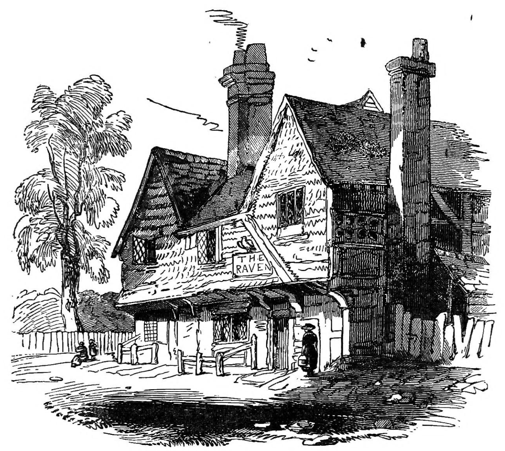
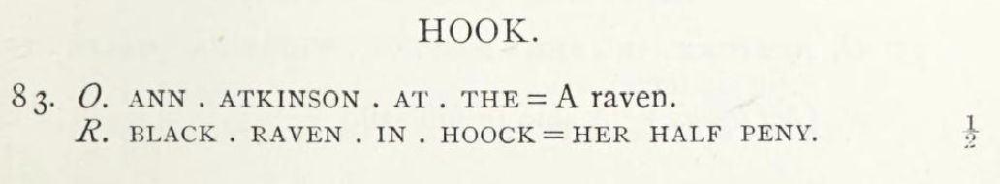
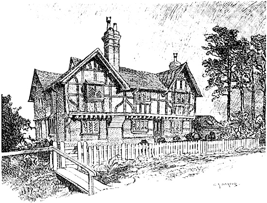

The Old Raven stood on London Road for over three hundred years — built around 1572 as a timber-framed Tudor coaching inn, serving travellers on the main road between London and the West Country until the railways changed everything. When the coaches stopped coming, the inn moved. Not the building — that stayed put — but the name, the license, and the business relocated to a new hotel beside Hook Station in 1902. The old building became a private residence, then a care home. Today it's Old Raven House Care Home, a Grade II listed building where timber frames from 1573 shelter residents instead of coaching passengers.

The Raven at Hook, drawn while the inn was still in business Engraving from William Hone, The Year Book of Daily Recreation and Information (1832)
Built1572–1573
Closed as InnOct 1902
Listed GradeGrade II
Current UseCare Home
Tudor Origins
Timber-frame analysis dates the Old Raven to around 1572–1573, making it a late Tudor building from the reign of Elizabeth I. The structure is classic 16th-century inn architecture: oak-framed construction with a jettied upper floor and herringbone brick infill between the timbers. Writing in 1906, travel author Charles G. Harper described it as built "of sound oak framing, filled with brick-nogging in herring-bone pattern" — noting that the building had "been suffered to retain all its old-world features of construction."
(Hampshire Field Club Newsletter No. 71;
Harper, 1906)
The inn served travellers on the London Road toward the south-west — already an important route connecting the capital with regional markets and ports. The Raven provided the essentials any traveller needed: food, drink, lodging, and fresh horses.
Dating Dispute
Both Hone (1832) and Harper (1906) dated the building to 1653, but modern timber-frame analysis by the Hampshire Field Club in 2019 pushed the date back to 1572–1573 — a full eighty years earlier. The earlier writers were relying on visual assessment or local tradition; the 2019 study used dendrochronological techniques unavailable in their day.
The Golden Age of Coaching
By the 17th century, the Raven had grown into a substantial establishment. Records from 1665 show it was run by the Atkinson family and had seven hearths — a measure used for taxation that indicated the building's size. Seven hearths meant a large property with multiple rooms for guests and staff.
(Hampshire Field Club Newsletter No. 71)
The inn was prominent enough to issue its own trade token — a copper halfpenny bearing the inscription "ANN . ATKINSON . AT . THE" with an image of a raven on the obverse, and "BLACK . RAVEN . IN . HOOCK — HER HALF PENY" on the reverse. These tokens functioned as small change during a nationwide coin shortage, redeemable for goods at the inn. An inventory from 1671 explicitly names the property "The Raven Inn at Hook" and lists at least seven chambers with beds for guests.
(Boyne, Trade Tokens Issued in the Seventeenth Century;
Hampshire Field Club Newsletter No. 71)

Ann Atkinson's halfpenny token for the Black Raven in "Hoock" From William Boyne, Trade Tokens Issued in the Seventeenth Century in England, Wales, and Ireland
By 1842, ownership had passed to Thomas and Charles May, prominent brewers from nearby Basingstoke. Their purchase tied the Raven into the regional brewing network, ensuring steady ale supply while integrating the inn into a larger commercial operation — a common arrangement for coaching inns, which were valuable assets generating reliable income from both lodging and drink.
(Hampshire Field Club Newsletter No. 71)
"Jack the Painter"
The Raven's most notorious guest was James Aitken — born in Edinburgh in September 1752, apprenticed to a painter (hence the nickname), and later known by the aliases "Hill" and "Hind." After travelling through the American colonies, Aitken conceived a fanatical plan to cripple the Royal Navy by burning its dockyards. On 7 December 1776, he set fire to the upper loft of the rope-house at Portsmouth Dockyard, causing an estimated £60,000 in damage. A second incendiary device — a tin box filled with matches and spirits of wine, hidden in the hemp-house — failed only because too much hemp had been packed over it, excluding the air and snuffing the matches before they reached the fuel.
(Hone, 1832)
What followed was a one-man crime spree across southern England: robberies at High Wycombe and Fairford, two failed attempts to scale the walls of Plymouth Dockyard, and arson attacks on ships in Bristol harbour. The whole nation was alarmed, and the government offered a £500 reward. Aitken was eventually traced back to Hook — and was "taken prisoner in the kitchen of the Raven at Hook, while handing a black-jack of foaming ale among the other frequenters of the house."
(Hone, 1832)
Tried at Winchester Assizes on 6 March 1777, he was found guilty on the testimony of one Baldwin, who had visited him in prison and extracted a full confession. On 10 March he was executed at the dock-gates and gibbeted from the mizzen-mast of the Arethusa, specially erected at a height of 64½ feet on Blockhouse Beach. He reportedly "behaved with decency, seemed penitent, acknowledged the justness of his sentence, and advised the government to vigilance."
(Hone, 1832)
Afterlife of a Skeleton
Some years after Aitken's execution, a party of sailors took down his skeleton from the gibbet, placed it in a sack, and left it in a chimney in the corner of a public house at Gosport. A tobacco-stopper later made from one of his mummified fingers was exhibited at the Naval Exhibition of 1891 at Chelsea.
The Railway Changes Everything
The London and South Western Railway built its line through Hook in 1839. Long-distance coach traffic collapsed almost immediately. While Hook Station wouldn't open until 1883, the mere presence of the railway shifted travel patterns across southern England.
When the station finally opened, the gravitational centre of the village began shifting toward the railway. The Raven's location — which had been its strength for three centuries — became a liability. It sat on London Road, half a mile from the new station. Passing trade from stagecoaches had been the inn's lifeblood, and that traffic was gone. An inn with seven-plus guest chambers needed more than village regulars to survive.
The Move to the Station
In 1901, the May brewery purchased land adjacent to Hook Station and began building a replacement. The new Raven Hotel would carry the old name and inherit its license, but it would be a modern Edwardian structure suited to the railway age. The last innkeeper of the old Raven was granted a license to continue trading only until October 1902, conditional on the new hotel opening.
(Hampshire Field Club Newsletter No. 71)
In November 1902, the old building was put up for auction — held, fittingly, at the new Raven Hotel. The property was purchased by Rev. A. G. Barker of Sherfield-on-Loddon, who converted it into a private residence.
(Hampshire Field Club Newsletter No. 71)
Harper, writing in 1906, listed the Raven among England's "inns retired from business," noting that "it ceased in 1903 to be an inn, and the building has since been restored and converted into a private residence styled the 'Old Raven House.'" His illustration captures the building in this transitional moment: no longer an inn, not yet settled into its next life.
(Harper, 1906)

The Old Raven after closure, now a private residence Illustration by Charles G. Harper, from The Old Inns of Old England, Vol. II (1906)
From Inn to Care Home
By 1911, census records show the house occupied by Colonel Frank Matthews (retired), living there with a full household staff. Locals began calling it "Old Raven" to distinguish it from the new Raven Hotel at the station.
(Hampshire Field Club Newsletter No. 71)
The building remained a private residence through most of the 20th century. In 1987, it was officially opened as Old Raven House Care Home. The conversion required a modern extension to meet regulations, but the original 16th-century core was preserved. Its Grade II listing protects the Tudor timber frame and original features.
(Old Raven House Care Home)
Sources & Further Reading
Boyne, William. Trade Tokens Issued in the Seventeenth Century in England, Wales, and Ireland (1858). Available via Internet Archive — Primary record of Ann Atkinson's "Black Raven in Hoock" halfpenny token
Hone, William. The Year Book of Daily Recreation and Information (London, 1832). Available via Internet Archive — Detailed account of "Jack the Painter" and his capture at the Raven, with engraving of the inn while still active
Harper, Charles G. The Old Inns of Old England, Vol. II (London: Chapman & Hall, 1906), pp. 85-87. Available via Project Gutenberg — Eyewitness account of the building shortly after closure, illustration by the author, and the "Jack the Painter" connection
Timber-frame analysis dates the building to around 1572–1573, making it a late Tudor coaching inn.
When did it close as an inn?
October 1902, when the license transferred to the new Raven Hotel near Hook Station.
Who was "Jack the Painter"?
James Aitken, a Scottish painter who set fire to Portsmouth Dockyard in December 1776, causing £60,000 damage. He was captured at the Raven itself — arrested in the kitchen while drinking ale with the regulars. Tried at Winchester, executed March 1777.
What is it now?
Old Raven House Care Home, a residential care facility. The Grade II listed Tudor building is preserved and still in use.